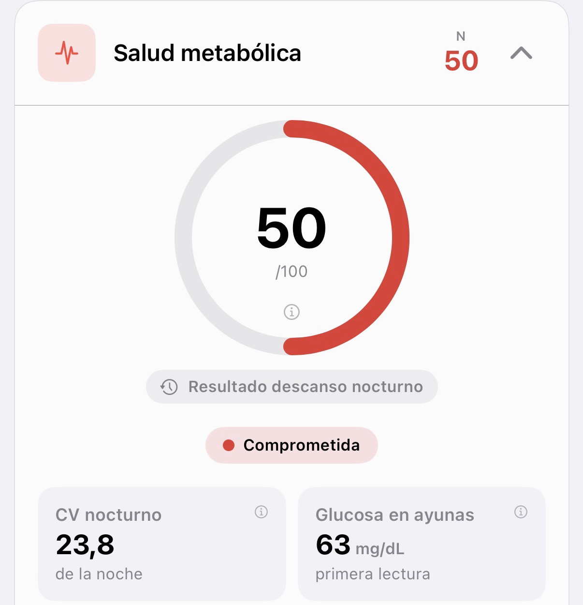

Indicadores Glucovibes
¿Y si un día cualquiera predijera tu salud futura?
Así funciona tu indicador de salud metabólica.
Desliza →
Hacemos visible lo invisible
Así funciona tu indicador de salud metabólica.
Desliza →

Captura real de la app Glucovibes de una Viber: resultado de su descanso nocturno.
Ordenar tus platos, moverte tras comer, cuidar el descanso.
Desliza →
glucovibes.com